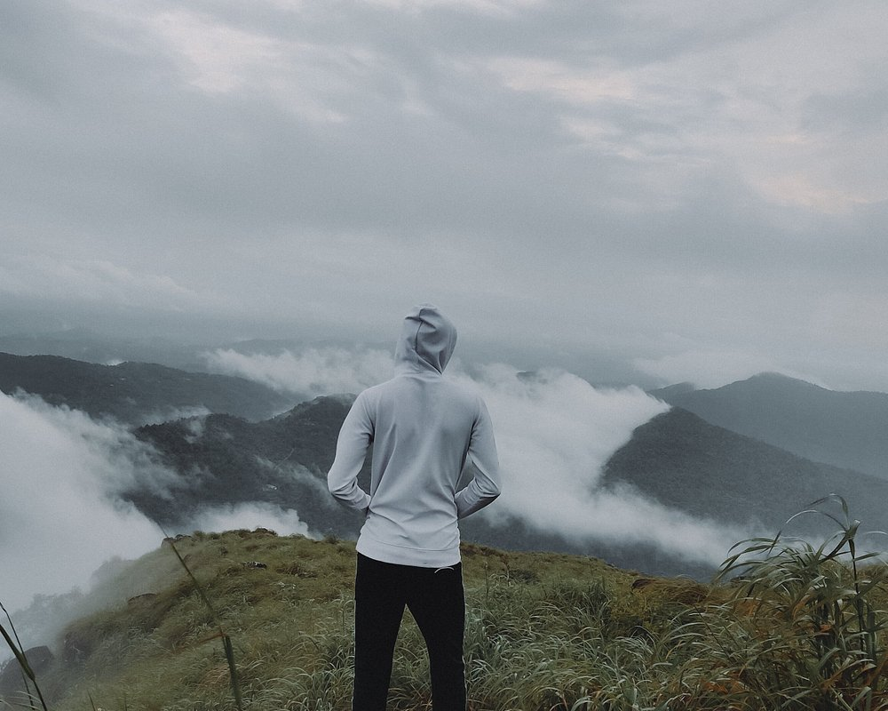
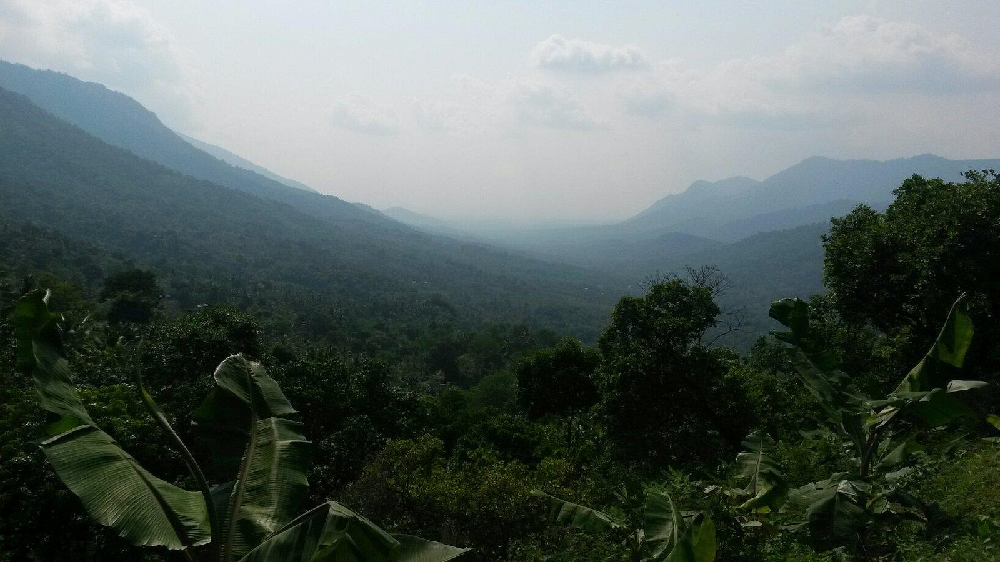
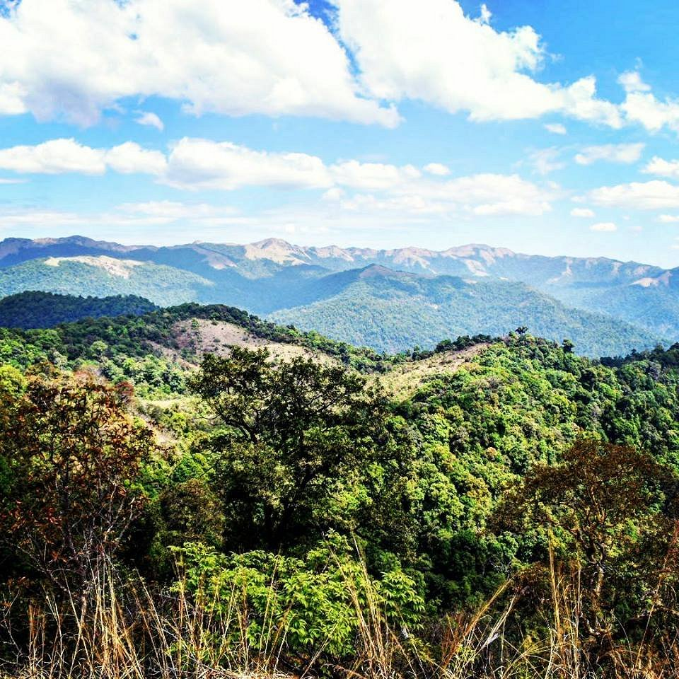
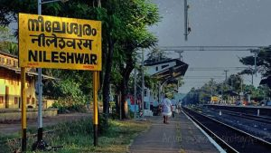
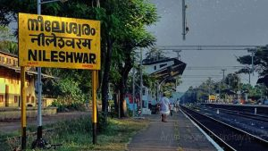
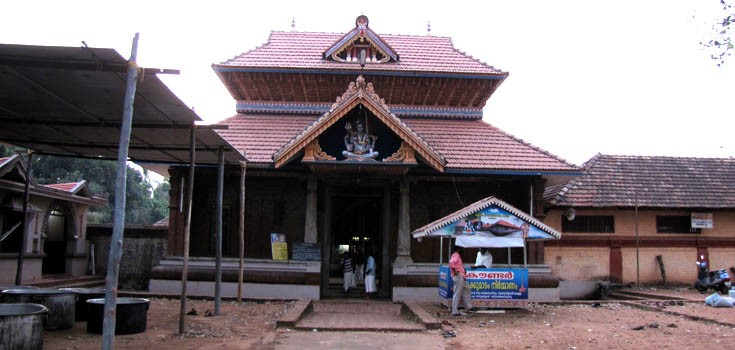

Kasarkode - Top Of Kerala
1. BEKKAL FORT


Kasaragod boasts of the largest and best preserved Fort in the whole of Kerala, bordered by a magnificent beach. Shaped like a giant keyhole, the historic Bekal Fort was built in the 17th century. This historic monument offers a superb view of the Arabian Sea from its tall observation towers, which were occupied by gigantic cannons till afew centuries ago.
Near the Fort is an old Mosque that is said to have been built by Tipu Sultan of Mysore. Originally constructed by the rulers of the ancient Kadampa Dynasty, the Fort changed hands over the years to the Kolathiri Rajas, the Vijayanagara Empire, Tipu Sultan and finally, the British East India Company.
The lofty, circular laterite structure of the fort that stands at a height of 130 feet is shaped like a giant keyhole. The walls around rise to 12 metres in height. The highlights include tall observation towers which presumably would have been occupied by gigantic cannons until a few centuries ago, a water tank with its flight of steps and a tunnel that opens towards the south. The architectural beauty of the fort also met the defence requirements of various rulers,which was the main reason for the fort’s existence. There are also some pilgrim attractions nearby like the Lord Hanuman temple and an old Mosque which is believed to be built by Tippu Sultan.The Bekal beach is only a kilometre away from the fort which offers an enticing view of the imposing fort.
It has now become a favoured destination for weddings, ad shoots and filmmakers for its picturesque location. This is the largest and the best-preserved fort in the district and is now maintained by the Archaeological Department of Government of India.

2. KOTTANCHERRI HILLS
  A beautiful rain forest near Konnakad, the Kottancheri Hills is a part of the Western Ghats in Kasaragod district and an extension of Ranipuram wildlife sanctuary. The place is 30kms north-east of Kanhangad. The picnic centre at Kottancheri Hills makes it a favorite among the travellers. The hills are also ideal for trekking and are credited as trekker’s paradise. The nearness of the Talakaveri in the Brahmagiri mountain range of Kodaku adds to the charm of this place. The Forests of Kottancherry is packed with wildlife and merges with reserved forests of Kasaragod. Wild elephants, wild dogs, deer, wild pigs, rare birds, butterflies are all abundant here. The spot resembles much of the scenic beauty of Kodiakanal.

3. NILESHWARAM
 
 Nileshwaram is a town located in Kasaragod District of Kerala situated between two rivers Nileshwaram puzha and Karyangodu puzha. Neeleshwaram is known as the ‘Cultural capital of Kasaragod District’. The town is home to folk arts, temple festivals, a palace,sacred grooves, old markets, and a weaver street. Festivals in Nileshwaram are Pooram and Kalasam in Mannampurathukavu, the festival in Thaliyil temple and Thrukarthika and Pooram in Pallikkara Bhagavathi Temple.
Nileshwaram have many temple in its vicinity like Neelakandeswara Temple , Alingal sree Bhadra kali Temple , Benkana Kavu , Sri Vettaykkorumakan Temple, Pallikkara Sree Bhagavathi Temple , Arayakkil Sree Veerabhadraswami temple , Kadanjathoor Sree Krishna Temple , Sree Muthappan Temple , Shaasta Temple , Muchilot Bagavathi Temple Puthukai, Pallikkara Sree Kuruvat Chodachan Madam Vettaykkorumakan Temple and many more
